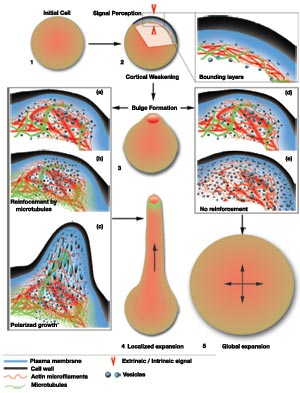

Cell Shape Model

1. The initial iso-diametric shape of a cell reflects a regular distribution of internal resources required for the growth process and an overall balance in the internal forces exerted on the cell's boundaries.
2. The reception and recognition of an extrinsic or intrinsic cue (arrow-heads) occurs on the cell's bounding layers (shown in the magnified transverse-section: from the outside -the cell-wall, plasma-membrane and the cytoskeletal mesh). SPIKE1, ROPs, putative Scar/WAVE-like proteins and members of their regulatory complex are probably activated at this early stage.
3. The initial responders to environmental cues affect the actin-mesh through the activity of membrane and cytoskeleton interacting FORMINs , actin-polymerization modulating ARP2/3 complex, ADF , AIP1-like, profilins, which cooperate in regional reorganization of the actin cytoskeleton by making it more dynamic and flexible. As the actin-mesh loosens locally the cortical site becomes weaker. Internal forces (such as turgor pressure) can now cause a small protuberance (bulge) to emerge on the cell's surface. Internally (a, d), the loosening of the actin-mesh can greatly facilitate the movement of vesicles carrying growth-material closer to the membrane and cell-wall layers for depositing their cargo.
4. The cortical weakening caused by the preceding events extends further and depending upon how much it is allowed to extend two possibilities arise; in (b) vesicle movement and assimilation of their contents can become targeted to a region, or in (e) vesicles remain untargeted and deposit their contents anywhere within the cell. Localized vesicle targeting can be achieved in (b) if the cortical-weakening can become restricted through actin-bundling-protein activity with additional reinforcement by endoplasmic microtubules regulated by polymerizing factors, MAPs and microtubule-motors . When microtubules are compromised and unable to restrict the cortical-weakening from spreading (as in e) the result is diffuse, non-targeted growth (e) to produce a globally rounded cell (panel 5). Polarity fixation occurs when both cortical actin-patches and endoplasmic microtubules display concurrence within a region (c). All cellular growth-resources are now recruited to the region for achieving "directional" growth and the development of a specific cellular form.
While the above schematic depicts a tip-growing cell a similar scenario can be envisioned for diffuse growing cells by making the growth-focus area larger.
For more details see Cell shape development in Plants. TRENDS IN PLANT SCIENCE. December 2004, and Local interactions shape plant cells. CURR OPIN CELL BIOL. 2006.
- NSERC funded project 046947.